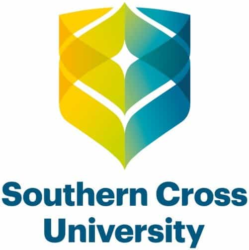

HAGRAM DESIGNS
HANNAH MCDONALD
University student currently undertaking a Bachelor of Information Technology. Aspiring to specialise in user experience design. Exceptional communication skills developed from 4+ years of working in retail. Looking to leverage my career in technology by finding a job that allows me to use my knowledge on leading-edge technologies as well as my interest and skill in customer communications.
PROFESSIONAL EXPERIENCE
McDonald's Lismore: front-counter worker 2014-2015
- First began this job at 14, built a strong foundation for my working life as I gained communication skills and work ethics at this job that will be taken with me for the rest of my career.
- Main duties were order taking, handling food sent from kitchen and cleaning.
- My communication skills allowed me to excel in the high-pressure situations that came with this job, I was able to perform excellent work in a team during rush hour as well as simultaneously practicing quality customer awareness and service.
- This job gave me heavy degree of resilience; I learnt to be able to bounce back from the most unpleasant situations with a smile and to be able to take on constructive criticism.
Network Video Lismore: shift supervisor 2015 - present
- Developed substantial skills in business awareness. Observing and learning the key functions of a small business has allowed me to understand the complex operations of business.
- Attention to detail within the workplace has proved to be important at this job; I have learnt this through the management of inventory, time and organisation. Ordering stock at the correct time and ensuring the business is meeting sales requirements through efficient inventory management and control.
- Handled various financial responsibilities such as till counting and balancing, preparing money floats for the next day of business, paying invoices and accounts and depositing weekly cash earnings into the bank.
EDUCATION
Alstonville High School
Graduated 2017
SOUTHERN CROSS UNIVERSITY
Currently studying BA of IT
